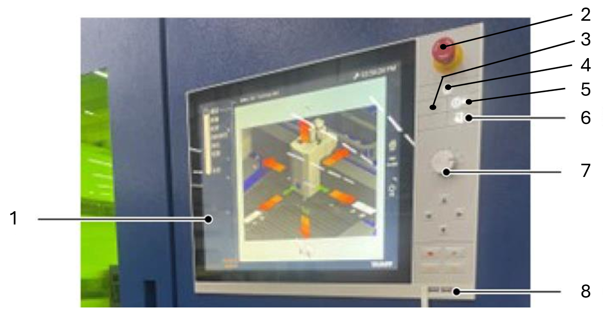

Preparation
This is the process to prepare the machine for operation. For detail please refer to the operation manual.

The panel consists of the following components:
-
Display
-
Emergency stop
-
Laser tst mode
-
Drive enable key
-
Laser enable
-
Door switch
-
Override
-
USB port
| Operating element | Requirements | Description |
|---|---|---|
"EMERGENCY STOP" push-button-Push-button: |
■ The power supply to the entire system is disconnected (the 24 V control voltage is maintained). − All axis motions stop. − All drives are switched off electrically. ■ The processing is interrupted: − The laser beam is switched off. − The beam block is closed. − The gas supply of the cutting gas is interrupted. − An active processing program is aborted and needs to be restarted, if required. − The machine’s home position has to be approached. − The reference points of the axes are retained. ■ The hydraulic unit, the compact dust extractor and the length wise and/or transverse conveyor, respectively, are switched off. ■ All pneumatic movements are stopped or transferred to a dan ger-free state. The compressed air supply remains unaffected. ■ Vacuum remains. |
|
|
For switching on: ■ The button flashes. |
Switches the machine On. ■ Lights up when the machine is ready for operation. Switches the machine Off. ■ Goes out when machine switched off. Machine Off is also triggered by: ■ "EMERGENCY STOP" push-button. ■ Errors which trigger an "EMERGENCY STOP" |
|
Is lit if the machine is in test mode. The selected processing program will run without the laser beam being ignited. |
|
|
Starts the automatic switch-on cycle of the laser: ■ Flashes while the switch-on cycle is being carried out. ■ Is lit if the laser is ready for operation. Starts the automatic switch-off cycle of the laser: ■ Flashes while the switch-off cycle is being carried out. ■ Goes out when machine switched off. |
|
|
Safety door is unlocked and can be opened. |
|
|
"EMERGENCY STOP" is not active. No "Feed hold" is active. |
Flashes when the safety light barrier which shields the pallet changer is interrupted. Reactivate safety light barrier: Press "Acknowledge safety light bar rier" foot switch on the start post. Then press "Start" button on the control panel. Continue the paused movements of the pallet changer: press "Start" |
|
Controls the travel speed of the X and Y axes between 4 and 120%: ■ In the Production core operation, the travel regulation is 4-100 m/min. |
|
|
Moves the selected NC axes in the (+) or (-) direction. ■ Moves the axes in the +/- direction. ■ The plus/minus buttons increase/reduce the value of "Manual functions" with the symbol ±. |
|
|
Deletes active fault messages. Cancels an active program. The reference points are maintained. The home position might be lost. |
|
|
Lights up if "FEED HOLD" is triggered. ■ All axis motions stop. ■ The processing is interrupted: − The laser beam is switched off. − The beam block is closed. − The gas supply of the cutting gas is interrupted. − An active processing program is paused and can be fur ther executed by acknowledging. ■ The hydraulic unit, the compact dust extractor and the length wise and/or transverse conveyor, respectively, are switched off. ■ All pneumatic movements are stopped or transferred to a dan ger-free state. The compressed air supply remains unaffected. ■ Vacuum remains. To acknowledge any "feed hold": press "Acknowledge feed hold". |
|
"Acknowledging feed stop" ("Feed start") |
No errors present. The safety light barrier is acknowl edged. |
Flashes if an error is present or a "FEED HOLD" has been trig gered (for example, by interrupting the safety light barrier). Acknowledges active error. Acknowledge "FEED HOLD". |
|
No errors present. Machine is ready to operate. |
The "Start" button has the following functions depending on the core operation selected: ■ If the Setup core operation is selected: the machine moves to the home position without starting to execute the order list or the selected processing program. ■ In all other core operations: the machine moves to the home position and starts executing the order list. |


Steps after switching the machine on
Unlocking the EMERGENCY STOP pushbutton
EMERGENCY STOP push buttons are located on the operating panel of the laser processing machine and on the safety post of the pallet changer. To release the EMERGENCY STOP push-button, press it in and turn it in clockwise direction.
Close the door
use the door switch
Switch on the drives
use the drive enable key
Homing the Axis
When the machine is switched on, the axes must be homed. This is done by pressing the HOME > Automatic key in the HMI interface. The axes are then moved to the reference point.
Switch on the laser
lorem
Calibrating the height control, Nozzle centering
please refer to the respective sections in the operation manual.
clear the error messages
Whenever there is a message from PLC, it will be displayed in bottom left corner. The user can view the messages.
Switching the machine off
Please shout down the HMI before switch off the system power supply to prevent a possible loss of data.